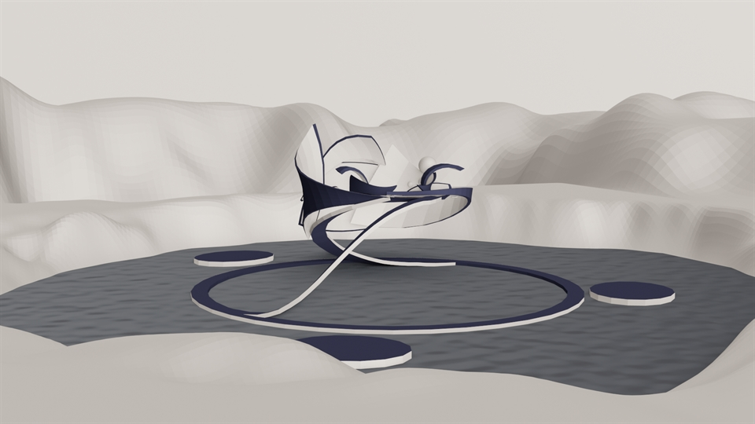
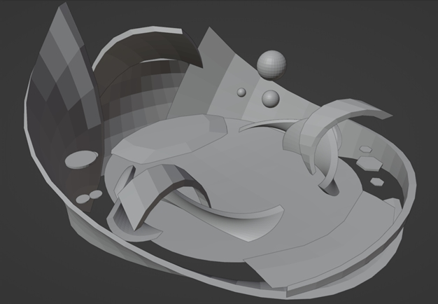

January 1-30, 2022
Group project
The Monaverse Build-a-Thon is a month-long event wherein people can create virtual spaces for the metaverse. The theme for this year was spaces designed for people to gather and socialize, display artwork, and perform.
Created and designed the architecture for a virtual space, and additional furniture assets.
Blender
As one of the themes for this Build-a-Thon was performance, I thought about what type of performances I have been to. Most of them have been in ampitheatres, where the room is designed in a way so that sound will distribute towards the audience from the stage. I was inspired by this idea, so I experimented with flowing shapes that direct people towards the center stage.
People spawn at the rear of the platform and are greeted with a direct path towards the stage, or the option to divert left and right. These corridors are meant to allow people to display images along the walls and hang items from the arc above. Additionally, display platforms are floating around the stage.
As the space will be hosted and displayed within a web browser, one of the concerns a team member brought up was polycount. Therefore, I reduced the polycount of the stage and surrounding terrain in order to optimize it.
One of the major problems encountered throughout the month was communication and availability. My group is composed of members from around the world and different timezones made it inconvenient for everyone to gather at times. Luckily, I was available for the meetings as they were held in EST timezone, and we used Google Meet in order to discuss the project. If any members were not available, any new tasks or changes were communicated through a Discord chat.
The final space was put together by Max and contains a diety model that holds up the stage, music, and vegetation by Ezzy, material design by Pebble, and the terrain and stage I built.
During the project, I had fun experimenting with Blender's modifier toolkit and practicing my modelling skills. Although there were some troubles with communication, all in all, we were able to complete the final project and utilize everyone's skillsets.